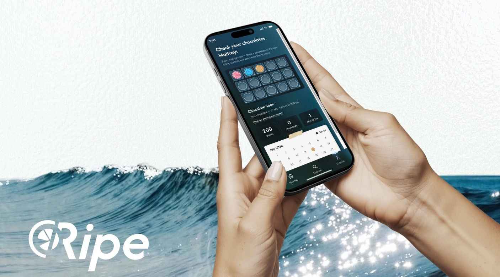
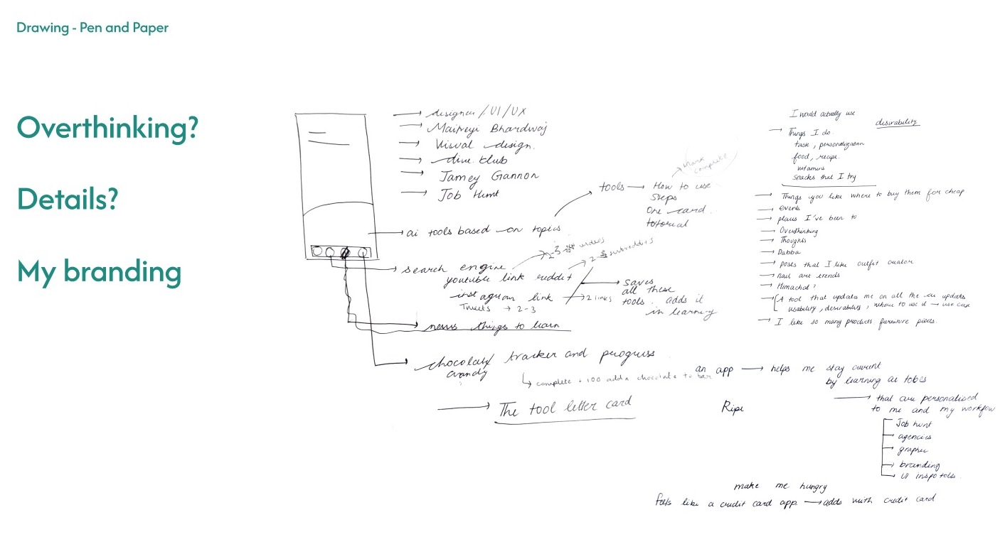
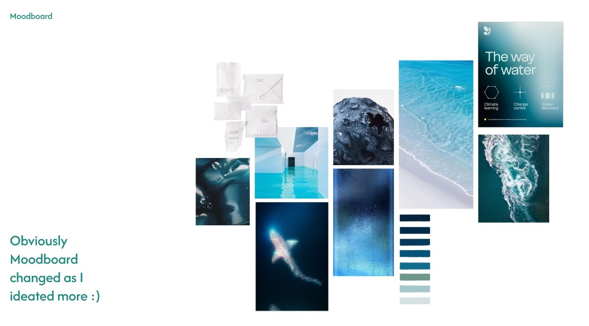
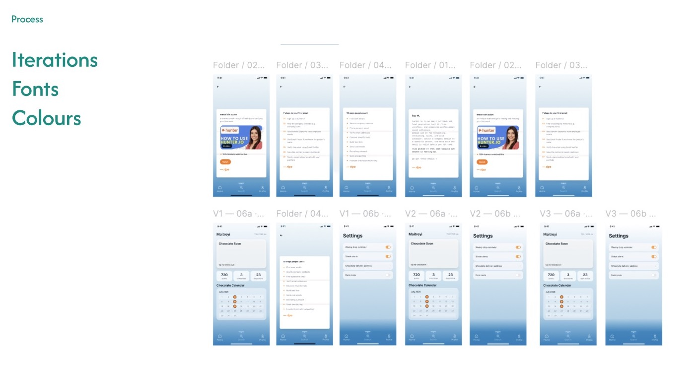
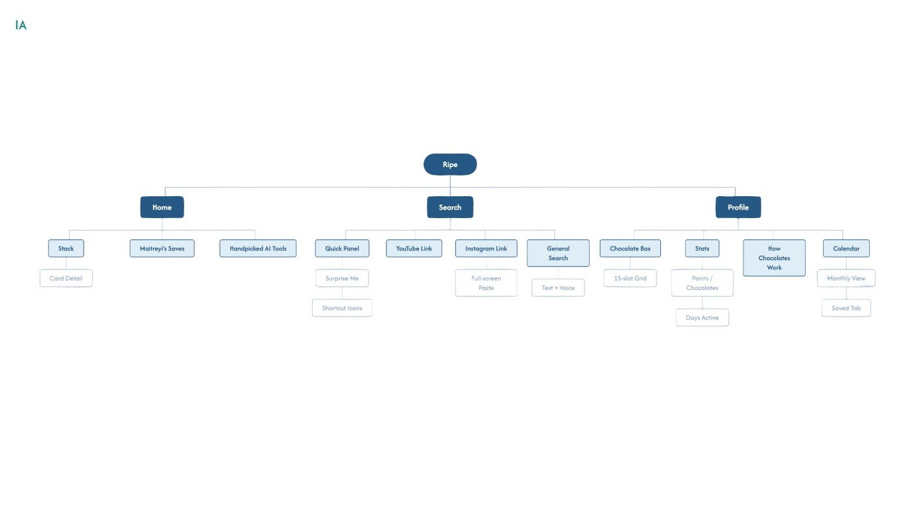

Handpicked AI tools for one person: me. Ripe tells me straight up if a tool is worth my time: ripe, situational, or skip.
It's small. It's just for me. That's the point.

Where it started, pen and paper.
I'm an industrial designer, then a product designer, so I know both worlds but I'm not fully inside either. I have no UI/UX friends to text and ask "is this tool actually good?"
And I save everything and watch none of it. Reels and videos, saved meaning to come back, never opened again.
I needed a filter.
Ripe gives each tool one verdict: ripe, situational, or skip. That's what a friend would tell you.
It also catches what I save. A reel or a video goes in, and it turns into something short I actually finish.
I stress-eat when I'm avoiding work. So instead of fighting that, I used it.
Open Ripe, fifteen minutes, one tool, done. Each session fills a square in a chocolate box.
On the other side is a chocolate-covered strawberry, and my family buys it, because I actually earned it.

The moodboard, after it changed.
Ripe reads as citrus right away: orange, loud, obvious. I moved away from that on purpose.
I wanted ripe to mean the feeling, not the fruit. The blue-dusk tones feel calm and clear, like the moment right before I actually do something.
Orange would rush me. Blue gives me room to reset first, then act. That matters most on the days I'm mass-applying to jobs, already stressed and low on energy.
The mark keeps the fruit and the colour drops it: a citrus slice, drawn in teal and white.
I tried it on a sticker, a bottle and packaging to see if it holds up away from the screen.

Iterations on fonts and colours.
The app has three sections: Home, Search and Profile.
Home holds the stack of handpicked tools and what I've saved. Search takes a YouTube link, an Instagram link, or text and voice. Profile holds the chocolate box, my stats and a calendar.
